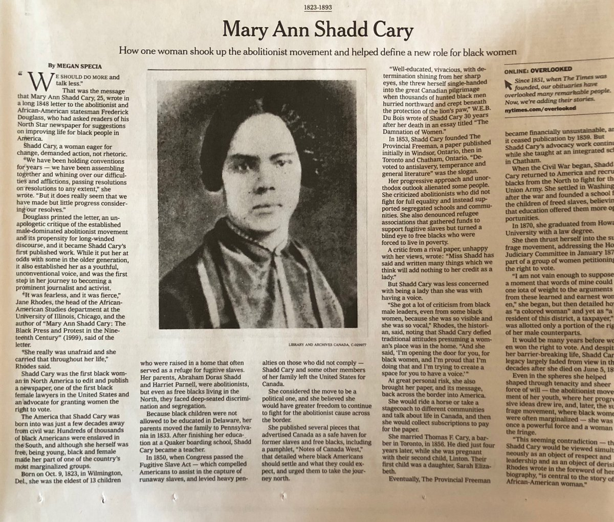

A americana foi a primeira mulher a falar abertamente ao público misto, entre homens mulheres, brancos e negros. Ela também foi a primeira afro-americana a fazer palestras públicas e também discursos públicos anti-escravidão. Stewart se concentrou particularmente nos direitos das mulheres negras - religião e justiça social entre os negros. Ela era alguém que poderia ser chamado de matrona: uma das matriarcas do pensamento feminista negro durante a era Jim Crow.
"Ó filhos da África, quando suas vozes serão ouvidas em nossas salas legislativas, desafiando seus inimigos, disputando direitos e liberdade iguais?"
Maria W. Stewart (por volta de 1803 - 17 de dezembro de 1879) era ativista, abolicionista e palestrante americana. Como colaboradora do The Libertator, Stewart atuou em círculos progressistas e influenciou grupos como a New England Anti-Slavery Society. Depois que sua carreira como professora chegou ao fim, ela trabalhou como professora em Washington, DC. Filha de pais negros livres, Maria se tornou orfã aos cinco anos, tornando-se uma serva contratada do clérigo até os quinze anos. Ela também frequentou as escolas sabáticas de Connecticut e aprendeu a ler e escrever. Em 1826, Maria se casou com James W. Stewart. Com seu casamento, ela se tornou parte da pequena classe média negra livre de Boston e logo se envolveu em algumas de suas instituições, incluindo a Massachusetts General Colored Association, que trabalhava para a abolição imediata da escravidão. Quando James W. Stewart morreu em 1829, os executores brancos da vontade de seu marido levaram sua herança através de ações legais, deixando-a sem um tostão. Em 1831, publicou seu primeiro ensaio em forma de panfleto no jornal abolicionista de Boston, The Liberator, chamado Religião e os Puros Princípios da Moralidade. Com base nessa notoriedade, Stewart iniciou sua carreira de falar em público em um momento em que as mulheres eram proibidas de falar em público, especialmente para públicos que incluíam homens. Em seu primeiro discurso, em abril de 1832, Stewart falou diante de uma audiência apenas para mulheres na African American Female Intelligence Society , uma instituição fundada pela comunidade negra livre de Boston. Em 21 de setembro de 1832, Stewart proferiu uma segunda palestra, desta vez para uma audiência que também incluía homens. Ela falou no Franklin Hall, o local das reuniões da New England Anti-Slavery Society. Ela pediu direitos civis para os negros do norte e questionou a emigração para a África , que foi então promovida pela American Colonization Society .
 Em 27 de fevereiro de 1833, Stewart proferiu sua terceira palestra pública , "Direitos e Liberdade Africanos". Sua quarta e última palestra em Boston antes de se mudar para Nova York foi um “Discurso de Despedida” em 21 de setembro de 1833. Em 1835, Garrison publicou um panfleto com seus quatro discursos, além de alguns ensaios e poemas, intitulando-o Productions of Mrs. Maria W. Stewart. Em Nova York, participou da Convenção Anti-escravidão das Mulheres de 1837. Ela se sustentou ensinando em escolas públicas em Manhattan e Brooklyn e, eventualmente, tornou-se diretora assistente da Escola Williamsburg no Brooklyn.
Em 1861, ela se mudou para Washington, onde voltou a lecionar durante a Guerra Civil. Por volta de 1870 Stewart foi nomeada para dirigir o serviço de limpeza no Hospital dos Freedmen e Asilo em Washington. Em 1878, quando ela tinha setenta e cinco anos, Stewart começou a receber uma pensão de viúva de oito dólares por mês com base no serviço de seu marido na Marinha dos EUA na Guerra de 1812. Ela usou a pensão, incluindo alguns pagamentos retroativos, para republicar Meditações. da Caneta da Sra. Maria W. Stewart , acrescentando material sobre sua vida durante a Guerra Civil. O livro foi publicado em dezembro de 1879, pouco antes de sua morte, em 17 de dezembro, no Freedman's Hospital.
Fonte: Nielsen, E. (2007, 11 de fevereiro) Maria W. Miller Stewart (1803-1879).